OpenTelementry
OpenShift has various tracing features, one of which is based on OpenTelemetry. From an upstream perspective, OpenTelemetry is a server and client architecture, with the server called the collector and the client called instrumentation. The collector is responsible for receiving data from the client and then exporting it to backends such as Tempo, Jaeger, Zipkin, etc. The instrumentation is responsible for collecting data from the application and then sending it to the collector.
For instrumentation, OpenTelemetry provides support for various languages, including Java, Python, Go, etc. One form of instrumentation is as a static library, which is statically linked to your program. Another form is as an agent; for Java, the agent is based on Java bytecode. When you start Java, you can add the agent to the command line or via an environment variable to start the agent. The agent will then collect data and send it to the collector.
For OpenShift’s integration with OpenTelemetry, the recommended approach is to use the auto-injection method, which sets environment variables and starts the Java application. In this manner, the application will be automatically instrumented and send data to the collector without requiring any application code changes.
Here is the arch of this lab:
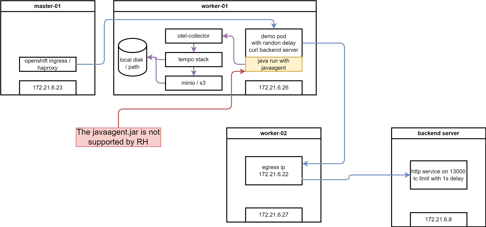
🚨🚨🚨 Please notes, openshift only support the auto-inject behavior (it is in TP, but can be moved to GA at anytime with customer requirement), but not the agent.jar liberary.
try on rhel
We will try 3 example on rhel, one is manual inject, and the other is auto inject.
manual export
upstream project has a example, to export telementry by changing the java code, and import lib only, no byte-code injection, this is suitable for developer team to control the telementry, not the operation team. And it avoid the security concern around byte-code injection. We try it out.
- https://github.com/wangzheng422/opentelemetry-java-examples
build the container image
# on vultr
# dnf install -y /usr/bin/javac
dnf install -y java-latest-openjdk-devel java-1.8.0-openjdk-devel java-11-openjdk-devel java-17-openjdk-devel java-21-openjdk-devel
dnf install -y /usr/bin/podman-compose /usr/bin/mvn
yum-config-manager --add-repo https://download.docker.com/linux/centos/docker-ce.repo
yum install -y docker-ce docker-ce-cli containerd.io docker-buildx-plugin docker-compose-plugin
systemctl enable --now docker
mkdir -p /data
cd /data
git clone https://github.com/wangzheng422/opentelemetry-java-examples
cd /data/opentelemetry-java-examples/spring-native
git checkout wzh-2024-04-14
../gradlew bootBuildImage --imageName=otel-native-graalvm-wzh
# save the image
docker tag otel-native-graalvm-wzh quay.io/wangzheng422/qimgs:opentelemetry-java-examples-spring-native-2024.04.28
docker push quay.io/wangzheng422/qimgs:opentelemetry-java-examples-spring-native-2024.04.28start up the test container
docker compose up
# try curl to test
curl http://localhost:8080/ping
you can see the log
collector-1 | 2024-04-29T14:12:32.471Z info TracesExporter {"kind": "exporter", "data_type": "traces", "name": "logging", "resource spans": 1, "spans": 2}
collector-1 | 2024-04-29T14:12:32.471Z info ResourceSpans #0
collector-1 | Resource SchemaURL: https://opentelemetry.io/schemas/1.24.0
collector-1 | Resource attributes:
collector-1 | -> container.id: Str(56146575ce76572fd4c2c77339904893b301d2d7408e6f662ac91ff7539a7cfd)
collector-1 | -> host.arch: Str(amd64)
collector-1 | -> host.name: Str(56146575ce76)
collector-1 | -> os.description: Str(Linux 5.14.0-362.24.1.el9_3.0.1.x86_64)
collector-1 | -> os.type: Str(linux)
collector-1 | -> process.command_args: Slice(["/layers/paketo-buildpacks_bellsoft-liberica/jre/bin/java","org.springframework.boot.loader.launch.JarLauncher"])
collector-1 | -> process.executable.path: Str(/layers/paketo-buildpacks_bellsoft-liberica/jre/bin/java)
collector-1 | -> process.pid: Int(1)
collector-1 | -> process.runtime.description: Str(BellSoft OpenJDK 64-Bit Server VM 21.0.2+14-LTS)
collector-1 | -> process.runtime.name: Str(OpenJDK Runtime Environment)
collector-1 | -> process.runtime.version: Str(21.0.2+14-LTS)
collector-1 | -> service.instance.id: Str(d12d40b9-ebee-485a-80a2-2184b814a32d)
collector-1 | -> service.name: Str(graal-native-example-app)
collector-1 | -> telemetry.distro.name: Str(opentelemetry-spring-boot-starter)
collector-1 | -> telemetry.distro.version: Str(2.3.0-alpha)
collector-1 | -> telemetry.sdk.language: Str(java)
collector-1 | -> telemetry.sdk.name: Str(opentelemetry)
collector-1 | -> telemetry.sdk.version: Str(1.37.0)
collector-1 | ScopeSpans #0
collector-1 | ScopeSpans SchemaURL:
collector-1 | InstrumentationScope io.opentelemetry.spring-webmvc-6.0 2.3.0-alpha
collector-1 | Span #0
collector-1 | Trace ID : da7438ff488105fb46a370a1db85d38e
collector-1 | Parent ID :
collector-1 | ID : 006b79f8f819f0ea
collector-1 | Name : GET /ping
collector-1 | Kind : Server
collector-1 | Start time : 2024-04-29 14:12:27.945406159 +0000 UTC
collector-1 | End time : 2024-04-29 14:12:28.29162761 +0000 UTC
collector-1 | Status code : Unset
collector-1 | Status message :
collector-1 | Attributes:
collector-1 | -> url.scheme: Str(http)
collector-1 | -> url.path: Str(/ping)
collector-1 | -> network.peer.address: Str(192.168.112.1)
collector-1 | -> server.address: Str(localhost)
collector-1 | -> client.address: Str(192.168.112.1)
collector-1 | -> user_agent.original: Str(curl/7.76.1)
collector-1 | -> http.response.status_code: Int(200)
collector-1 | -> http.route: Str(/ping)
collector-1 | -> network.protocol.version: Str(1.1)
collector-1 | -> server.port: Int(8080)
collector-1 | -> network.peer.port: Int(59600)
collector-1 | -> http.request.method: Str(GET)
collector-1 | ScopeSpans #1
collector-1 | ScopeSpans SchemaURL:
collector-1 | InstrumentationScope io.opentelemetry.example.graal
collector-1 | Span #0
collector-1 | Trace ID : da7438ff488105fb46a370a1db85d38e
collector-1 | Parent ID : 006b79f8f819f0ea
collector-1 | ID : 9fc94c7ca4f8c40a
collector-1 | Name : makeHttpRequest
collector-1 | Kind : Client
collector-1 | Start time : 2024-04-29 14:12:27.946792873 +0000 UTC
collector-1 | End time : 2024-04-29 14:12:28.28559109 +0000 UTC
collector-1 | Status code : Unset
collector-1 | Status message :
collector-1 | Attributes:
collector-1 | -> url.full: Str(https://mirror.stream.centos.org/9-stream/BaseOS/x86_64/iso/CentOS-Stream-9-20240422.0-x86_64-dvd1.iso.manifest)
collector-1 | -> component: Str(http)
collector-1 | -> http.request.method: Str(GET)
collector-1 | {"kind": "exporter", "data_type": "traces", "name": "logging"}
manual inject
In this example will use bytecode-injection, with java code change, and lib import, to export the log and trace to collector.
- https://github.com/open-telemetry/opentelemetry-java-instrumentation
- https://github.com/wangzheng422/opentelemetry-java-examples
build the container image
# on vultr
# dnf install -y /usr/bin/javac
dnf install -y java-latest-openjdk-devel java-1.8.0-openjdk-devel java-11-openjdk-devel java-17-openjdk-devel java-21-openjdk-devel
dnf install -y /usr/bin/podman-compose
yum-config-manager --add-repo https://download.docker.com/linux/centos/docker-ce.repo
yum install -y docker-ce docker-ce-cli containerd.io docker-buildx-plugin docker-compose-plugin
systemctl enable --now docker
mkdir -p /data
cd /data
git clone https://github.com/wangzheng422/opentelemetry-java-examples
cd /data/opentelemetry-java-examples/javaagent
git checkout wzh-2024-04-14
# ../gradlew --no-build-cache --no-configuration-cache bootJar
../gradlew bootJarstart up the container
This demo, consist a sample java app, will accept http call at /ping, and send http request to backend web service, wait the backend return, and return to client at last. During the process, it will log some message, and we will use opentelementry to collect the log and trace.
# custom the docker-compose.yml
# change WZH_URL as you need
# start java app and collector locally
docker compose up --build
# call the rest api
curl http://localhost:8080/ping
# pong
# to stop
docker compose downand you get output from docker collector
collector-1 | Trace ID: 6141f0a97797ca24e5517e147aae4699
collector-1 | Span ID: 41360031730646c6
collector-1 | Flags: 1
collector-1 | {"kind": "exporter", "data_type": "logs", "name": "logging"}
collector-1 | 2024-04-29T02:06:13.384Z info TracesExporter {"kind": "exporter", "data_type": "traces", "name": "logging", "resource spans": 1, "spans": 4}
collector-1 | 2024-04-29T02:06:13.385Z info ResourceSpans #0
collector-1 | Resource SchemaURL: https://opentelemetry.io/schemas/1.24.0
collector-1 | Resource attributes:
collector-1 | -> container.id: Str(5fa246b719ff6c09561f9778058d7334cece0cd2b494d2b91a5c11ae789afa2f)
collector-1 | -> host.arch: Str(amd64)
collector-1 | -> host.name: Str(5fa246b719ff)
collector-1 | -> os.description: Str(Linux 5.14.0-362.24.1.el9_3.0.1.x86_64)
collector-1 | -> os.type: Str(linux)
collector-1 | -> process.command_args: Slice(["/opt/java/openjdk/bin/java","-jar","-javaagent:/opentelemetry-javaagent.jar","/app.jar"])
collector-1 | -> process.executable.path: Str(/opt/java/openjdk/bin/java)
collector-1 | -> process.pid: Int(7)
collector-1 | -> process.runtime.description: Str(Eclipse Adoptium OpenJDK 64-Bit Server VM 11.0.23+9)
collector-1 | -> process.runtime.name: Str(OpenJDK Runtime Environment)
collector-1 | -> process.runtime.version: Str(11.0.23+9)
collector-1 | -> service.instance.id: Str(d02bdb5f-a050-4eb2-94e2-c4b20cc00773)
collector-1 | -> service.name: Str(agent-example-app)
collector-1 | -> telemetry.distro.name: Str(opentelemetry-java-instrumentation)
collector-1 | -> telemetry.distro.version: Str(2.3.0)
collector-1 | -> telemetry.sdk.language: Str(java)
collector-1 | -> telemetry.sdk.name: Str(opentelemetry)
collector-1 | -> telemetry.sdk.version: Str(1.37.0)
collector-1 | ScopeSpans #0
collector-1 | ScopeSpans SchemaURL:
collector-1 | InstrumentationScope io.opentelemetry.example.javagent.Application
collector-1 | Span #0
collector-1 | Trace ID : 6141f0a97797ca24e5517e147aae4699
collector-1 | Parent ID : 6c73946faa0b919a
collector-1 | ID : 41360031730646c6
collector-1 | Name : makeHttpRequest
collector-1 | Kind : Internal
collector-1 | Start time : 2024-04-29 02:06:10.125153222 +0000 UTC
collector-1 | End time : 2024-04-29 02:06:10.552023024 +0000 UTC
collector-1 | Status code : Unset
collector-1 | Status message :
collector-1 | Attributes:
collector-1 | -> thread.id: Int(27)
collector-1 | -> thread.name: Str(http-nio-8080-exec-1)
collector-1 | Span #1
collector-1 | Trace ID : 6141f0a97797ca24e5517e147aae4699
collector-1 | Parent ID : deff680571954317
collector-1 | ID : 6c73946faa0b919a
collector-1 | Name : doWork
collector-1 | Kind : Internal
collector-1 | Start time : 2024-04-29 02:06:09.992222888 +0000 UTC
collector-1 | End time : 2024-04-29 02:06:10.552045969 +0000 UTC
collector-1 | Status code : Unset
collector-1 | Status message :
collector-1 | Attributes:
collector-1 | -> thread.id: Int(27)
collector-1 | -> thread.name: Str(http-nio-8080-exec-1)
collector-1 | ScopeSpans #1
collector-1 | ScopeSpans SchemaURL:
collector-1 | InstrumentationScope io.opentelemetry.http-url-connection 2.3.0-alpha
collector-1 | Span #0
collector-1 | Trace ID : 6141f0a97797ca24e5517e147aae4699
collector-1 | Parent ID : 41360031730646c6
collector-1 | ID : a85b789704e71e62
collector-1 | Name : GET
collector-1 | Kind : Client
collector-1 | Start time : 2024-04-29 02:06:10.176069278 +0000 UTC
collector-1 | End time : 2024-04-29 02:06:10.550553842 +0000 UTC
collector-1 | Status code : Unset
collector-1 | Status message :
collector-1 | Attributes:
collector-1 | -> thread.id: Int(27)
collector-1 | -> url.full: Str(https://mirror.stream.centos.org/9-stream/BaseOS/x86_64/iso/CentOS-Stream-9-20240422.0-x86_64-dvd1.iso.manifest)
collector-1 | -> thread.name: Str(http-nio-8080-exec-1)
collector-1 | -> http.response.status_code: Int(200)
collector-1 | -> server.address: Str(mirror.stream.centos.org)
collector-1 | -> network.protocol.version: Str(1.1)
collector-1 | -> http.request.method: Str(GET)
collector-1 | ScopeSpans #2
collector-1 | ScopeSpans SchemaURL:
collector-1 | InstrumentationScope io.opentelemetry.tomcat-7.0 2.3.0-alpha
collector-1 | Span #0
collector-1 | Trace ID : 6141f0a97797ca24e5517e147aae4699
collector-1 | Parent ID :
collector-1 | ID : deff680571954317
collector-1 | Name : GET /ping
collector-1 | Kind : Server
collector-1 | Start time : 2024-04-29 02:06:09.841673 +0000 UTC
collector-1 | End time : 2024-04-29 02:06:10.602714395 +0000 UTC
collector-1 | Status code : Unset
collector-1 | Status message :
collector-1 | Attributes:
collector-1 | -> server.port: Int(8080)
collector-1 | -> thread.id: Int(27)
collector-1 | -> http.response.status_code: Int(200)
collector-1 | -> url.path: Str(/ping)
collector-1 | -> network.peer.address: Str(172.21.0.1)
collector-1 | -> server.address: Str(localhost)
collector-1 | -> client.address: Str(172.21.0.1)
collector-1 | -> http.route: Str(/ping)
collector-1 | -> http.request.method: Str(GET)
collector-1 | -> network.peer.port: Int(60600)
collector-1 | -> url.scheme: Str(http)
collector-1 | -> thread.name: Str(http-nio-8080-exec-1)
collector-1 | -> user_agent.original: Str(curl/7.76.1)
collector-1 | -> network.protocol.version: Str(1.1)
collector-1 | {"kind": "exporter", "data_type": "traces", "name": "logging"}
So, we can see the log message is collected by opentelementry, and send to collector. From the docker file, we can see the java program start with javaagent parameter
ENTRYPOINT java -jar -javaagent:/opentelemetry-javaagent.jar /app.jarwe can see the metric is manually setting by the java program, and send to collector
private void doWork(int sleepTime) throws InterruptedException, IOException {
Span span = tracer.spanBuilder("doWork").startSpan();
try (Scope ignored = span.makeCurrent()) {
Thread.sleep(sleepTime);save the image
we save the container image, for later use/demo
# save the image
docker tag javaagent-app quay.io/wangzheng422/qimgs:javaagent-app-2024.04.28
docker push quay.io/wangzheng422/qimgs:javaagent-app-2024.04.28
auto inject without code change
We will use a very simple java project, which will accept at /setRequest, and call backend service, and reture. The project will not depend on any lib from opentelementry, and do not contain any java code related with opentelementry.
During start up, it will run with javaagent cmdline parameter, that is byte-code inject, let us see what kind of information it can capture.
- https://github.com/wangzheng422/simple-java-http-server
run the demo app
# checkout
mkdir -p /data
cd /data
git clone https://github.com/wangzheng422/simple-java-http-server
cd /data/simple-java-http-server
mvn clean package
# customize docker-compose.yml
# change WZH_URL as you need
# run with javaagent and collector, to see the result locally
podman-compose up --build
# on localhost, call the rest api to test
curl -vvv http://localhost:8080/sendRequestThe opentelelmentry will collect the log and trace, and send to collector.
ScopeLogs #0
ScopeLogs SchemaURL:
InstrumentationScope com.example.httpservice.MyController
LogRecord #0
ObservedTimestamp: 2024-04-29 01:55:20.068681452 +0000 UTC
Timestamp: 2024-04-29 01:55:20.06867006 +0000 UTC
SeverityText: INFO
SeverityNumber: Info(9)
Body: Str(Response status code: 200 OK)
Trace ID: 19fb1cbaef1e177d1fbd3788d7e9a150
Span ID: 17b56eb0daf4e56a
Flags: 1
{"kind": "exporter", "data_type": "logs", "name": "logging"}
2024-04-29T01:55:22.619Z info TracesExporter {"kind": "exporter", "data_type": "traces", "name": "logging", "resource spans": 1, "spans": 2}
2024-04-29T01:55:22.619Z info ResourceSpans #0
Resource SchemaURL: https://opentelemetry.io/schemas/1.24.0
Resource attributes:
-> container.id: Str(97155789ad6de578af0d8f7519ac6cc47daaa0e258ee10f8a4836b0d752a0929)
-> host.arch: Str(amd64)
-> host.name: Str(97155789ad6d)
-> os.description: Str(Linux 5.14.0-362.24.1.el9_3.0.1.x86_64)
-> os.type: Str(linux)
-> process.command_args: Slice(["/opt/java/openjdk/bin/java","-jar","-javaagent:/opentelemetry-javaagent.jar","/http-service-1.0-SNAPSHOT.jar"])
-> process.executable.path: Str(/opt/java/openjdk/bin/java)
-> process.pid: Int(2)
-> process.runtime.description: Str(Eclipse Adoptium OpenJDK 64-Bit Server VM 22.0.1+8)
-> process.runtime.name: Str(OpenJDK Runtime Environment)
-> process.runtime.version: Str(22.0.1+8)
-> service.instance.id: Str(e145e7c8-ea31-4a01-b064-aeed67103eb4)
-> service.name: Str(agent-example-app)
-> telemetry.distro.name: Str(opentelemetry-java-instrumentation)
-> telemetry.distro.version: Str(2.3.0)
-> telemetry.sdk.language: Str(java)
-> telemetry.sdk.name: Str(opentelemetry)
-> telemetry.sdk.version: Str(1.37.0)
ScopeSpans #0
ScopeSpans SchemaURL:
InstrumentationScope io.opentelemetry.http-url-connection 2.3.0-alpha
Span #0
Trace ID : 19fb1cbaef1e177d1fbd3788d7e9a150
Parent ID : 17b56eb0daf4e56a
ID : 74c35875a5683544
Name : GET
Kind : Client
Start time : 2024-04-29 01:55:19.100572969 +0000 UTC
End time : 2024-04-29 01:55:19.867810253 +0000 UTC
Status code : Unset
Status message :
Attributes:
-> server.address: Str(mirror.stream.centos.org)
-> network.protocol.version: Str(1.1)
-> http.request.method: Str(GET)
-> http.response.status_code: Int(200)
-> url.full: Str(https://mirror.stream.centos.org/9-stream/BaseOS/x86_64/iso/CentOS-Stream-9-20240422.0-x86_64-dvd1.iso.manifest)
-> thread.id: Int(41)
-> thread.name: Str(http-nio-8080-exec-1)
ScopeSpans #1
ScopeSpans SchemaURL:
InstrumentationScope io.opentelemetry.tomcat-7.0 2.3.0-alpha
Span #0
Trace ID : 19fb1cbaef1e177d1fbd3788d7e9a150
Parent ID :
ID : 17b56eb0daf4e56a
Name : GET /sendRequest
Kind : Server
Start time : 2024-04-29 01:55:18.682487829 +0000 UTC
End time : 2024-04-29 01:55:20.127925703 +0000 UTC
Status code : Unset
Status message :
Attributes:
-> user_agent.original: Str(curl/7.76.1)
-> network.protocol.version: Str(1.1)
-> network.peer.port: Int(37286)
-> url.scheme: Str(http)
-> thread.name: Str(http-nio-8080-exec-1)
-> url.path: Str(/sendRequest)
-> network.peer.address: Str(10.89.0.1)
-> server.address: Str(localhost)
-> client.address: Str(10.89.0.1)
-> http.route: Str(/sendRequest)
-> http.request.method: Str(GET)
-> server.port: Int(8080)
-> http.response.status_code: Int(200)
-> thread.id: Int(41)
{"kind": "exporter", "data_type": "traces", "name": "logging"}The output is almost the same with manual inject. So you can see that the java code is not changed, but the opentelementry is able to collect the log and trace, and the information is good enough.
install and configure tempo
To this point, we will try to install opentelementry on ocp, the first step is to configure the storage for opentelementry, we wil use tempo, this is the recommend storage solution from redhat.
create minio as S3
To configure tempo storage, it depends on S3, so we will create a minio as S3.
oc new-project observability
# on helper
S3_NAME='observability'
S3_NS='observability'
S3_IMAGE='docker.io/minio/minio:RELEASE.2021-06-17T00-10-46Z.hotfix.35a0912ff'
cat << EOF > ${BASE_DIR}/data/install/s3-codellama.yaml
---
apiVersion: v1
kind: Service
metadata:
name: minio-${S3_NAME}
spec:
ports:
- name: minio-client-port
port: 9000
protocol: TCP
targetPort: 9000
selector:
app: minio-${S3_NAME}
---
apiVersion: route.openshift.io/v1
kind: Route
metadata:
name: s3-${S3_NAME}
spec:
to:
kind: Service
name: minio-${S3_NAME}
port:
targetPort: 9000
---
apiVersion: v1
kind: PersistentVolumeClaim
metadata:
name: minio-${S3_NAME}-pvc
spec:
accessModes:
- ReadWriteOnce
resources:
requests:
storage: 100Gi
storageClassName: hostpath-csi
---
apiVersion: apps/v1
kind: Deployment
metadata:
name: minio-${S3_NAME}
labels:
app: minio-${S3_NAME}
spec:
replicas: 1
selector:
matchLabels:
app: minio-${S3_NAME}
template:
metadata:
labels:
app: minio-${S3_NAME}
spec:
initContainers:
- name: create-demo-dir
image: docker.io/busybox
command: ["mkdir", "-p", "/data1/demo"]
volumeMounts:
- name: data
mountPath: "/data1"
containers:
- args:
- server
- /data1
env:
- name: MINIO_ACCESS_KEY
value: admin
- name: MINIO_SECRET_KEY
value: redhatocp
image: ${S3_IMAGE}
imagePullPolicy: IfNotPresent
name: minio
nodeSelector:
kubernetes.io/hostname: "worker-01-demo"
securityContext:
allowPrivilegeEscalation: false
capabilities:
drop:
- ALL
runAsNonRoot: true
seccompProfile:
type: RuntimeDefault
volumeMounts:
- mountPath: "/data1"
name: data
volumes:
- name: data
persistentVolumeClaim:
claimName: minio-${S3_NAME}-pvc
EOF
oc create -n observability -f ${BASE_DIR}/data/install/s3-codellama.yaml
install tempo operator and configure
The next step, is to install temp operator from ocp operator hub, just following the offical document.
- https://docs.openshift.com/container-platform/4.14/observability/distr_tracing/distr_tracing_tempo/distr-tracing-tempo-installing.html
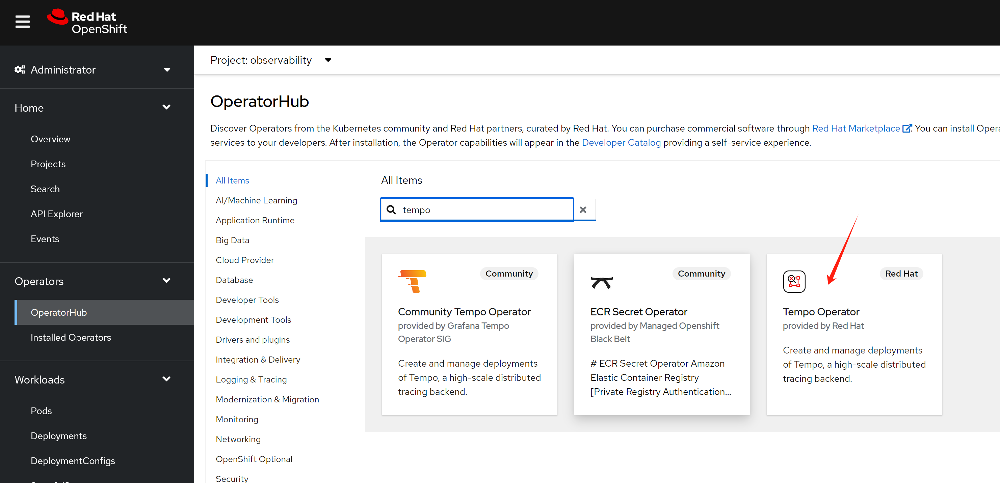
S3_NAME='observability'
cat << EOF > ${BASE_DIR}/data/install/tempo-codellama.yaml
---
apiVersion: v1
kind: Secret
metadata:
name: minio-${S3_NAME}-s3
stringData:
access_key_id: admin
access_key_secret: redhatocp
bucket: demo
endpoint: http://minio-${S3_NAME}.${S3_NAME}.svc.cluster.local:9000
# region: eu-central-1
---
apiVersion: tempo.grafana.com/v1alpha1
kind: TempoStack
metadata:
name: simplest
spec:
storageSize: 10Gi
storage:
secret:
name: minio-${S3_NAME}-s3
type: s3
# resources:
# total:
# limits:
# memory: 2Gi
# cpu: 2000m
template:
queryFrontend:
jaegerQuery:
enabled: true
monitorTab:
enabled: true
prometheusEndpoint: https://thanos-querier.openshift-monitoring.svc.cluster.local:9091
ingress:
# route:
# termination: edge
type: route
EOF
oc create --save-config -n observability -f ${BASE_DIR}/data/install/tempo-codellama.yaml
# oc delete -n observability -f ${BASE_DIR}/data/install/tempo-codellama.yaml
install opentelementry
We have tempo storage in place, next, we will install the opentelementry, select from operator hub, and install with default parameter
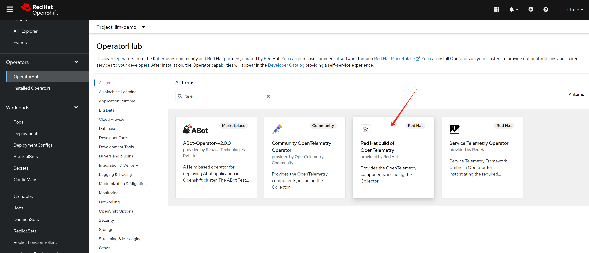
configure a collector, with configure from offical docs
- https://docs.openshift.com/container-platform/4.14/observability/otel/otel-installing.html
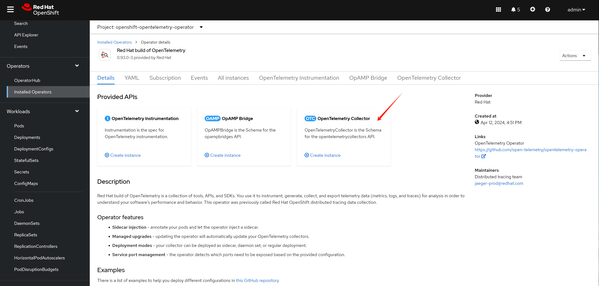
the default configue used in install doc, and with modification by author. create below in project observability
enable monitoring for user project
We need to see span metrics, this requires to enable user workload monitoring.
- https://docs.openshift.com/container-platform/4.14/observability/monitoring/enabling-monitoring-for-user-defined-projects.html
oc -n openshift-monitoring edit configmap cluster-monitoring-config
apiVersion: v1
kind: ConfigMap
metadata:
name: cluster-monitoring-config
namespace: openshift-monitoring
data:
config.yaml: |
enableUserWorkload: trueconfig telementry
following offical document, add telementry config.
# https://docs.openshift.com/container-platform/4.14/observability/otel/otel-forwarding.html
# add some modification
S3_NAME='observability'
cat << EOF > ${BASE_DIR}/data/install/otel-collector-codellama.yaml
---
apiVersion: v1
kind: ServiceAccount
metadata:
name: otel-collector-deployment
---
apiVersion: rbac.authorization.k8s.io/v1
kind: ClusterRole
metadata:
name: otel-collector
rules:
- apiGroups: ["", "config.openshift.io", "apps"]
resources: ["pods", "namespaces", "infrastructures", "infrastructures/status", "replicasets"]
verbs: ["get", "watch", "list"]
---
apiVersion: rbac.authorization.k8s.io/v1
kind: ClusterRoleBinding
metadata:
name: otel-collector
subjects:
- kind: ServiceAccount
name: otel-collector-deployment
namespace: $S3_NAME
roleRef:
kind: ClusterRole
name: otel-collector
apiGroup: rbac.authorization.k8s.io
EOF
oc create --save-config -n observability -f ${BASE_DIR}/data/install/otel-collector-codellama.yaml
# oc delete -n observability -f ${BASE_DIR}/data/install/otel-collector-codellama.yaml
cat << EOF > ${BASE_DIR}/data/install/otel-codellama.yaml
apiVersion: opentelemetry.io/v1alpha1
kind: OpenTelemetryCollector
metadata:
name: otel
spec:
mode: deployment
serviceAccount: otel-collector-deployment
observability:
metrics:
enableMetrics: true
config: |
connectors:
spanmetrics:
metrics_flush_interval: 15s
receivers:
otlp:
protocols:
grpc:
http:
jaeger:
protocols:
grpc:
thrift_binary:
thrift_compact:
thrift_http:
zipkin:
opencensus:
processors:
batch:
memory_limiter:
check_interval: 1s
limit_percentage: 50
spike_limit_percentage: 30
k8sattributes:
resourcedetection:
detectors: [openshift]
exporters:
prometheus:
endpoint: 0.0.0.0:8889
add_metric_suffixes: false
resource_to_telemetry_conversion:
enabled: true # by default resource attributes are dropped
otlp:
endpoint: "tempo-simplest-distributor.observability.svc.cluster.local:4317"
tls:
insecure: true
logging:
service:
telemetry:
metrics:
address: ":8888"
pipelines:
traces:
receivers: [otlp,opencensus,jaeger,zipkin]
processors: [memory_limiter, k8sattributes, resourcedetection, batch]
exporters: [otlp, spanmetrics,logging]
metrics:
receivers: [otlp,spanmetrics]
processors: []
exporters: [prometheus,logging]
EOF
oc create --save-config -n observability -f ${BASE_DIR}/data/install/otel-codellama.yaml
# oc delete -n observability -f ${BASE_DIR}/data/install/otel-codellama.yamltry it out with demo app
Remember the two java app we used to test on rhel? We will use them again, to deploy them on ocp, to see how to export the trace and log to opentelementry.
manual export
We use the example above to test manual export, we set the env variable manually, and start the java app.
# go back to helper
# create a dummy pod
cat << EOF > ${BASE_DIR}/data/install/demo1.yaml
---
apiVersion: v1
kind: Service
metadata:
name: wzh-demo-service
spec:
ports:
- name: service-port
port: 80
protocol: TCP
targetPort: 8080
selector:
app: wzh-demo-pod
---
apiVersion: route.openshift.io/v1
kind: Route
metadata:
name: wzh-demo
spec:
to:
kind: Service
name: wzh-demo-service
port:
targetPort: service-port
---
kind: Pod
apiVersion: v1
metadata:
name: wzh-demo-pod
labels:
app: wzh-demo-pod
spec:
nodeSelector:
kubernetes.io/hostname: 'worker-01-demo'
restartPolicy: Always
containers:
- name: demo1
image: >-
quay.io/wangzheng422/qimgs:opentelemetry-java-examples-spring-native-2024.04.28
env:
- name: OTEL_SERVICE_NAME
value: "examples-spring-native"
- name: OTEL_EXPORTER_OTLP_ENDPOINT
value: "http://otel-collector.observability.svc.cluster.local:4318"
- name: OTEL_LOGS_EXPORTER
value: "otlp"
- name: WZH_URL
value: "http://172.21.6.8:13000/singbox.config.json"
# command: [ "/bin/bash", "-c", "--" ]
# args: [ "tail -f /dev/null" ]
# imagePullPolicy: Always
---
kind: Pod
apiVersion: v1
metadata:
name: wzh-demo-util
spec:
nodeSelector:
kubernetes.io/hostname: 'worker-01-demo'
restartPolicy: Always
containers:
- name: demo1
image: >-
quay.io/wangzheng422/qimgs:rocky9-test
env:
- name: key
value: value
command: [ "/bin/bash", "-c", "--" ]
args: [ "tail -f /dev/null" ]
# imagePullPolicy: Always
EOF
oc create -n llm-demo -f ${BASE_DIR}/data/install/demo1.yaml
# oc delete -n llm-demo -f ${BASE_DIR}/data/install/demo1.yaml
# while true; do
# oc exec -it -n llm-demo wzh-demo-util -- curl http://wzh-demo-service/ping
# sleep 1
# done
while true; do
curl -s http://wzh-demo-llm-demo.apps.demo-gpu.wzhlab.top/ping
sleep 1
done
# siege -q -c 1000 http://wzh-demo-llm-demo.apps.demo-gpu.wzhlab.top/pingthen, we can see the tracing result, and metric from jaeger
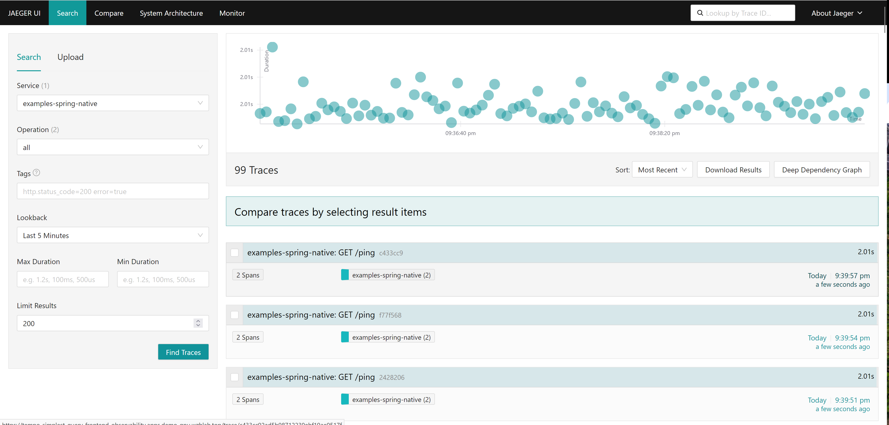
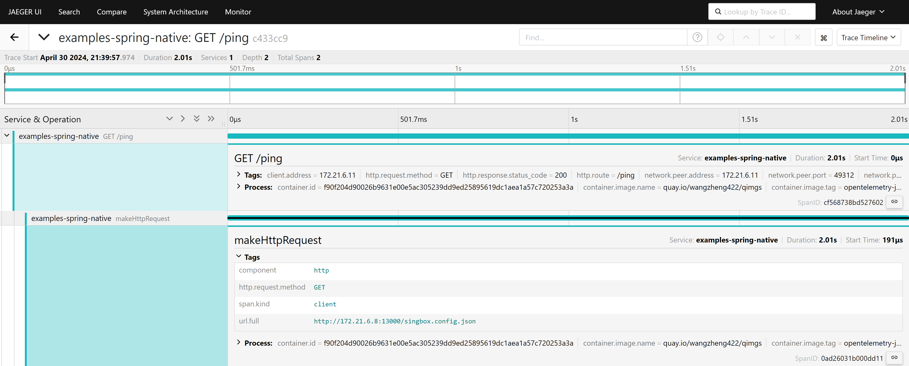
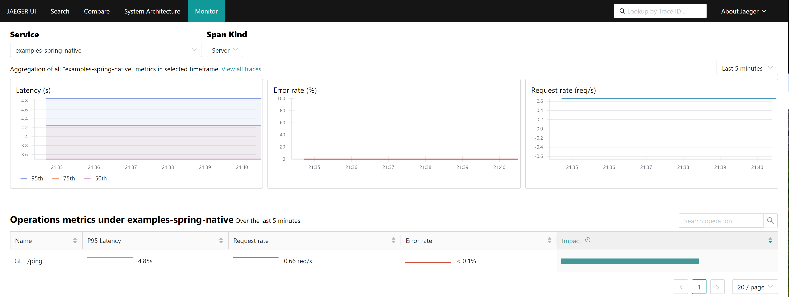
manual inject
We use the example above to test. It allow us set the export parameter manually. That means we should set the env variable by ourself, and start the java app with javaagent parameter.
# go back to helper
# create a dummy pod
cat << EOF > ${BASE_DIR}/data/install/demo1.yaml
---
apiVersion: v1
kind: Service
metadata:
name: wzh-demo-service
spec:
ports:
- name: service-port
port: 80
protocol: TCP
targetPort: 8080
selector:
app: wzh-demo-pod
---
apiVersion: route.openshift.io/v1
kind: Route
metadata:
name: wzh-demo
spec:
to:
kind: Service
name: wzh-demo-service
port:
targetPort: service-port
---
kind: Pod
apiVersion: v1
metadata:
name: wzh-demo-pod
labels:
app: wzh-demo-pod
spec:
nodeSelector:
kubernetes.io/hostname: 'worker-01-demo'
restartPolicy: Always
containers:
- name: demo1
image: >-
quay.io/wangzheng422/qimgs:javaagent-app-2024.04.28
env:
- name: OTEL_SERVICE_NAME
value: "agent-example-app"
- name: OTEL_EXPORTER_OTLP_ENDPOINT
value: "http://otel-collector.observability.svc.cluster.local:4318"
- name: OTEL_LOGS_EXPORTER
value: "otlp"
- name: WZH_URL
value: "http://172.21.6.8:13000/singbox.config.json"
# command: [ "/bin/bash", "-c", "--" ]
# args: [ "tail -f /dev/null" ]
# imagePullPolicy: Always
---
kind: Pod
apiVersion: v1
metadata:
name: wzh-demo-util
spec:
nodeSelector:
kubernetes.io/hostname: 'worker-01-demo'
restartPolicy: Always
containers:
- name: demo1
image: >-
quay.io/wangzheng422/qimgs:rocky9-test
env:
- name: key
value: value
command: [ "/bin/bash", "-c", "--" ]
args: [ "tail -f /dev/null" ]
# imagePullPolicy: Always
EOF
oc create -n llm-demo -f ${BASE_DIR}/data/install/demo1.yaml
# oc delete -n llm-demo -f ${BASE_DIR}/data/install/demo1.yaml
# while true; do
# oc exec -it -n llm-demo wzh-demo-util -- curl http://wzh-demo-service/ping
# sleep 1
# done
while true; do
curl -s http://wzh-demo-llm-demo.apps.demo-gpu.wzhlab.top/ping
sleep 1
doneFrom the UI, you can see the RTT to the backend.
- https://tempo-simplest-query-frontend-observability.apps.demo-gpu.wzhlab.top/search
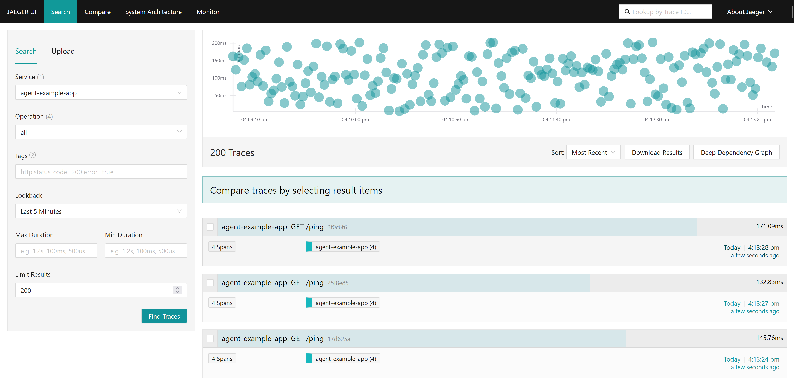
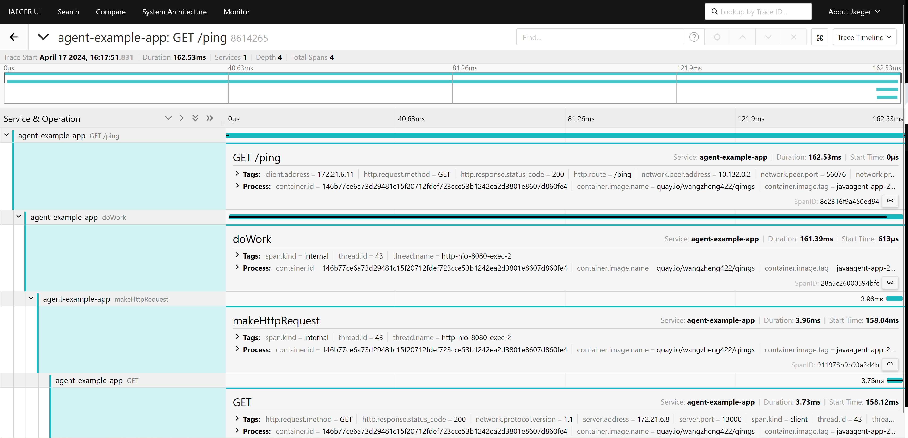
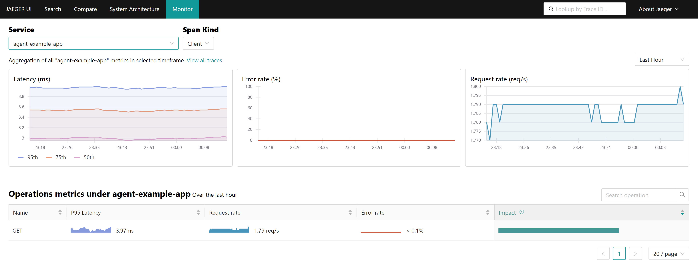
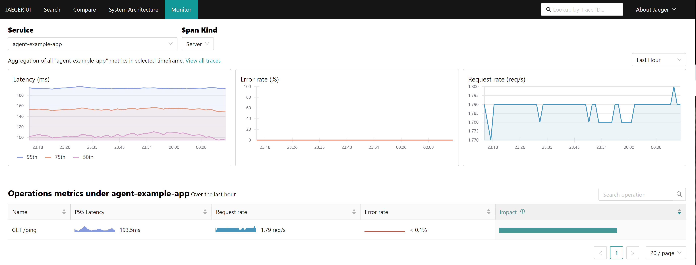
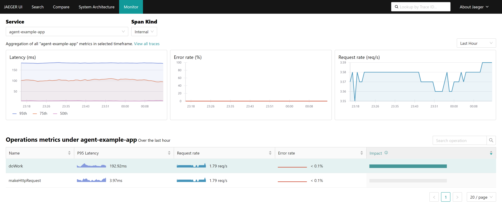
auto inject
In above example, the env variable is set manually, in next example, we will set the env variable automatically, by using the auto-inject feature from opentelementry.
cat << EOF > ${BASE_DIR}/data/install/java-instrumentation-codellama.yaml
apiVersion: opentelemetry.io/v1alpha1
kind: Instrumentation
metadata:
name: java-instrumentation
spec:
env:
- name: OTEL_EXPORTER_OTLP_TIMEOUT
value: "20"
exporter:
endpoint: http://otel-collector.observability.svc.cluster.local:4317
propagators:
- tracecontext
- baggage
sampler:
type: parentbased_traceidratio
argument: "0.25"
java:
env:
- name: OTEL_JAVAAGENT_DEBUG
value: "true"
EOF
oc create --save-config -n llm-demo -f ${BASE_DIR}/data/install/java-instrumentation-codellama.yaml
# oc delete -n llm-demo -f ${BASE_DIR}/data/install/java-instrumentation-codellama.yamlcreate app pods, add an annotation to enable auto-inject.
# go back to helper
# create a dummy pod
cat << EOF > ${BASE_DIR}/data/install/demo1.yaml
---
apiVersion: v1
kind: Service
metadata:
name: wzh-demo-service
spec:
ports:
- name: service-port
port: 80
protocol: TCP
targetPort: 8080
selector:
app: wzh-demo-pod
---
apiVersion: route.openshift.io/v1
kind: Route
metadata:
name: wzh-demo
spec:
to:
kind: Service
name: wzh-demo-service
port:
targetPort: service-port
---
kind: Pod
apiVersion: v1
metadata:
name: wzh-demo-pod
labels:
app: wzh-demo-pod
annotations:
instrumentation.opentelemetry.io/inject-java: "true"
spec:
nodeSelector:
kubernetes.io/hostname: 'worker-01-demo'
restartPolicy: Always
containers:
- name: demo1
image: >-
quay.io/wangzheng422/qimgs:simple-java-http-server-2024.04.24
env:
- name: WZH_URL
value: "http://172.21.6.8:13000/singbox.config.json"
# command: [ "/bin/bash", "-c", "--" ]
# args: [ "tail -f /dev/null" ]
# imagePullPolicy: Always
# ---
# kind: Pod
# apiVersion: v1
# metadata:
# name: wzh-demo-util
# spec:
# nodeSelector:
# kubernetes.io/hostname: 'worker-01-demo'
# restartPolicy: Always
# containers:
# - name: demo1
# image: >-
# quay.io/wangzheng422/qimgs:rocky9-test
# env:
# - name: key
# value: value
# command: [ "/bin/bash", "-c", "--" ]
# args: [ "tail -f /dev/null" ]
# # imagePullPolicy: Always
EOF
oc apply -n llm-demo -f ${BASE_DIR}/data/install/demo1.yaml
# oc delete -n llm-demo -f ${BASE_DIR}/data/install/demo1.yaml
# while true; do
# oc exec -it -n llm-demo wzh-demo-util -- curl http://wzh-demo-service/sendRequest
# sleep 1
# done
while true; do
curl -s http://wzh-demo-llm-demo.apps.demo-gpu.wzhlab.top/sendRequest
sleep 1
donecheck what opentelemtry add to pod, we can see, first, it adds an init container, to copy the javaagent.jar to the container, and then set the env variable for the container.
oc get pod wzh-demo-pod -n llm-demo -o yaml | yq .spec.initContainers
# - command:
# - cp
# - /javaagent.jar
# - /otel-auto-instrumentation-java/javaagent.jar
# image: ghcr.io/open-telemetry/opentelemetry-operator/autoinstrumentation-java:1.32.0
# imagePullPolicy: IfNotPresent
# name: opentelemetry-auto-instrumentation-java
# resources:
# limits:
# cpu: 500m
# memory: 64Mi
# requests:
# cpu: 50m
# memory: 64Mi
# securityContext:
# capabilities:
# drop:
# - MKNOD
# terminationMessagePath: /dev/termination-log
# terminationMessagePolicy: File
# volumeMounts:
# - mountPath: /otel-auto-instrumentation-java
# name: opentelemetry-auto-instrumentation-java
# - mountPath: /var/run/secrets/kubernetes.io/serviceaccount
# name: kube-api-access-2spqc
# readOnly: true
oc get pod wzh-demo-pod -n llm-demo -o yaml | yq .spec.containers[0].env
# - name: WZH_URL
# value: http://172.21.6.8:13000
# - name: OTEL_JAVAAGENT_DEBUG
# value: "true"
# - name: JAVA_TOOL_OPTIONS
# value: ' -javaagent:/otel-auto-instrumentation-java/javaagent.jar'
# - name: OTEL_EXPORTER_OTLP_TIMEOUT
# value: "20"
# - name: OTEL_SERVICE_NAME
# value: wzh-demo-pod
# - name: OTEL_EXPORTER_OTLP_ENDPOINT
# value: http://otel-collector.observability.svc.cluster.local:4317
# - name: OTEL_RESOURCE_ATTRIBUTES_NODE_NAME
# valueFrom:
# fieldRef:
# apiVersion: v1
# fieldPath: spec.nodeName
# - name: OTEL_PROPAGATORS
# value: tracecontext,baggage
# - name: OTEL_TRACES_SAMPLER
# value: parentbased_traceidratio
# - name: OTEL_TRACES_SAMPLER_ARG
# value: "0.25"
# - name: OTEL_RESOURCE_ATTRIBUTES
# value: k8s.container.name=demo1,k8s.namespace.name=llm-demo,k8s.nod
you can see the result from tempo frontend:
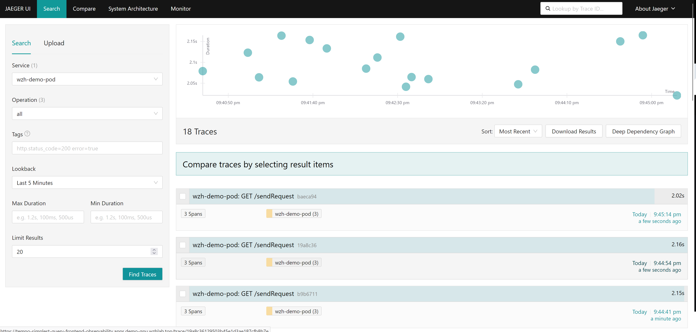
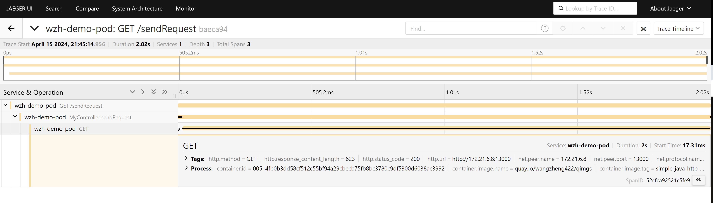
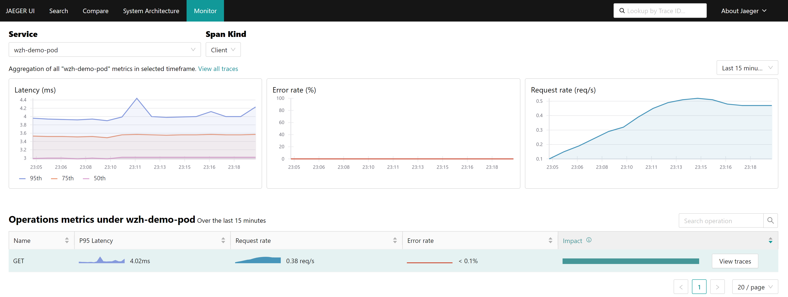
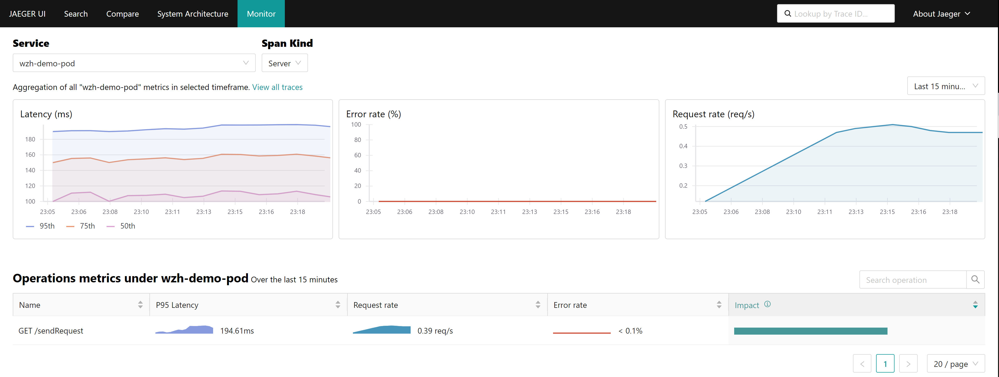
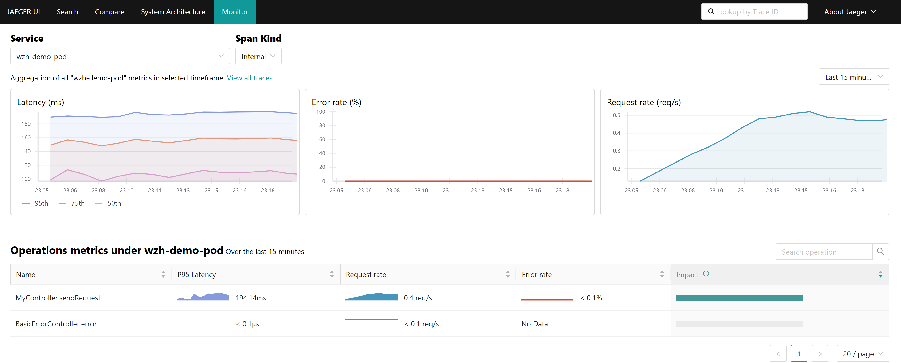
benchmark testing
we want to check how the opentelementry affect the performance, we will use siege to test the performance.
# on the backend server
# create a python server with concurrent serving capabilities
cd /data/py.test
cat << EOF > httpdemo.py
from http.server import ThreadingHTTPServer, SimpleHTTPRequestHandler
def run(server_class=ThreadingHTTPServer, handler_class=SimpleHTTPRequestHandler):
server_address = ('', 13000)
httpd = server_class(server_address, handler_class)
httpd.serve_forever()
if __name__ == '__main__':
run()
EOF
python3 httpdemo.py
# on the helper, client side, using ab tools to make the call
dnf install httpd-tools -y
while true; do
ab -t $((5*60)) -c 1000 http://wzh-demo-llm-demo.apps.demo-gpu.wzhlab.top/sendRequest
done
dnf install siege -y
# below will generate 90Mbps traffic load, because the app will sleep random ms
siege -q -c 1000 http://wzh-demo-llm-demo.apps.demo-gpu.wzhlab.top/sendRequest
This is the overall metrics of the pod, our load is not such high, so comparing to the normal run (without bytecode-injection), the performance is almost the same, and with bytecode-injection, the performance is slightly lower.
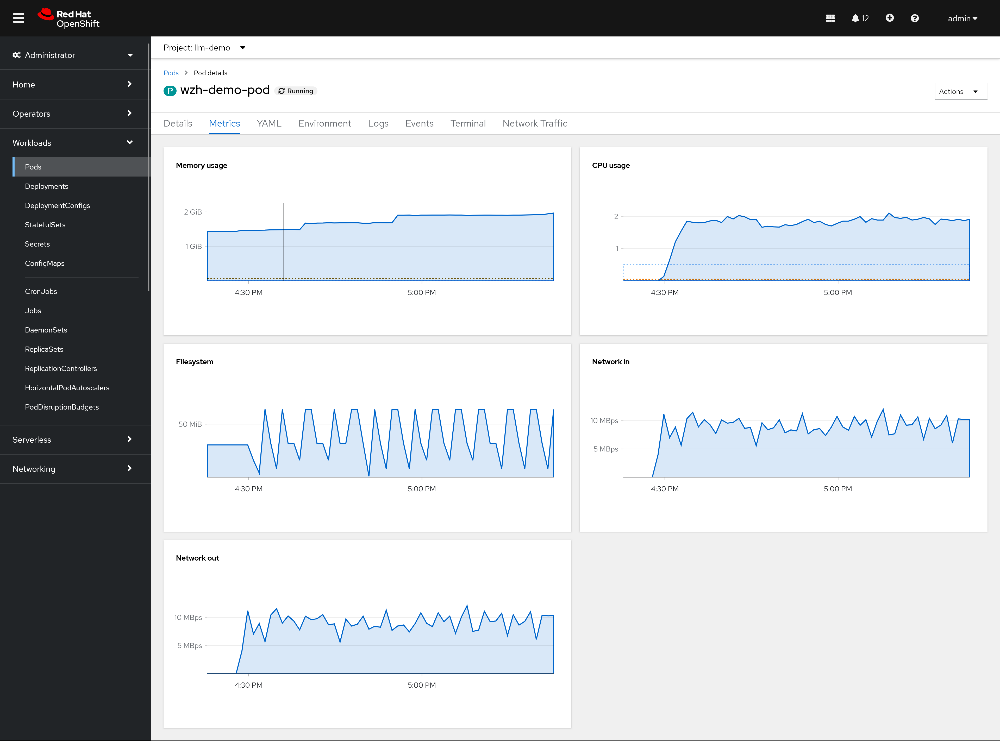
This is the performance overview of the observability project/namespace.
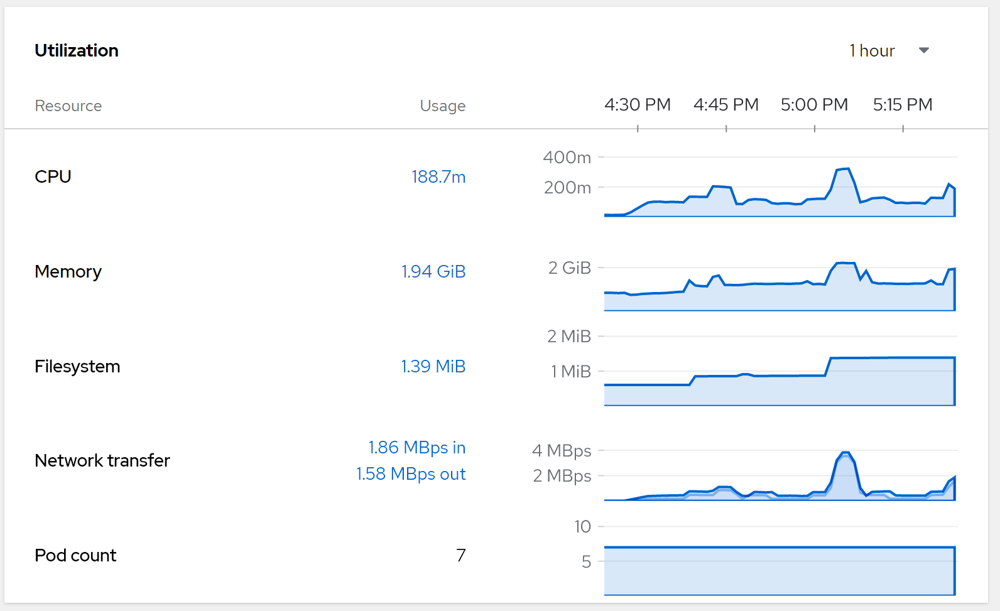
This is pod overview of the observabiltiy project/namespace
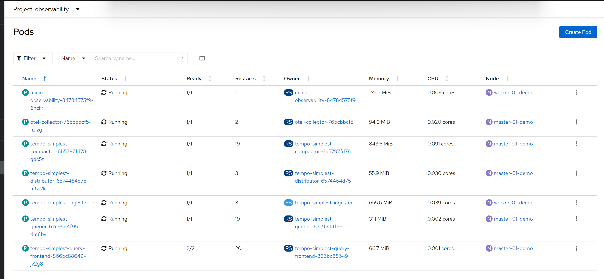
check the pvc usage, by checking the storage usage
# on helper node, get the pv name
oc get pvc -n observability
# NAME STATUS VOLUME CAPACITY ACCESS MODES STORAGECLASS AGE
# data-tempo-simplest-ingester-0 Bound pvc-51fe5076-b579-4d09-88d1-2b94e836cf26 7151Gi RWO hostpath-csi 18d
# minio-observability-pvc Bound pvc-6c4ba968-d69e-4c44-abef-ad3dfb9d45db 7151Gi RWO hostpath-csi 18d
# on worker-01, get the dir size
du -hs {pvc-51fe5076-b579-4d09-88d1-2b94e836cf26,pvc-6c4ba968-d69e-4c44-abef-ad3dfb9d45db}
# 62M pvc-51fe5076-b579-4d09-88d1-2b94e836cf26
# 6.6M pvc-6c4ba968-d69e-4c44-abef-ad3dfb9d45dbSo, in our test case, the storage usage is around 100MB/5mins
normal run
to compare, just run normal without bytecode-injection
# go back to helper
# create a dummy pod
cat << EOF > ${BASE_DIR}/data/install/demo1.yaml
---
apiVersion: v1
kind: Service
metadata:
name: wzh-demo-service
spec:
ports:
- name: service-port
port: 80
protocol: TCP
targetPort: 8080
selector:
app: wzh-demo-pod
---
apiVersion: route.openshift.io/v1
kind: Route
metadata:
name: wzh-demo
spec:
to:
kind: Service
name: wzh-demo-service
port:
targetPort: service-port
---
kind: Pod
apiVersion: v1
metadata:
name: wzh-demo-pod
labels:
app: wzh-demo-pod
# annotations:
# instrumentation.opentelemetry.io/inject-java: "true"
spec:
nodeSelector:
kubernetes.io/hostname: 'worker-01-demo'
restartPolicy: Always
containers:
- name: demo1
image: >-
quay.io/wangzheng422/qimgs:simple-java-http-server-2024.04.24
env:
- name: WZH_URL
value: "http://172.21.6.8:13000/singbox.config.json"
# command: [ "/bin/bash", "-c", "--" ]
# args: [ "tail -f /dev/null" ]
# imagePullPolicy: Always
EOF
oc apply -n llm-demo -f ${BASE_DIR}/data/install/demo1.yaml
# oc delete -n llm-demo -f ${BASE_DIR}/data/install/demo1.yaml
# on the helper, client side, using ab tools to make the call
dnf install httpd-tools -y
while true; do
ab -t $((5*60)) -c 1000 http://wzh-demo-llm-demo.apps.demo-gpu.wzhlab.top/sendRequest
done
dnf install siege -y
siege -q -c 1000 http://wzh-demo-llm-demo.apps.demo-gpu.wzhlab.top/sendRequest
The result is almost the same, so we can see the performance is not significantly affected by the opentelementry.
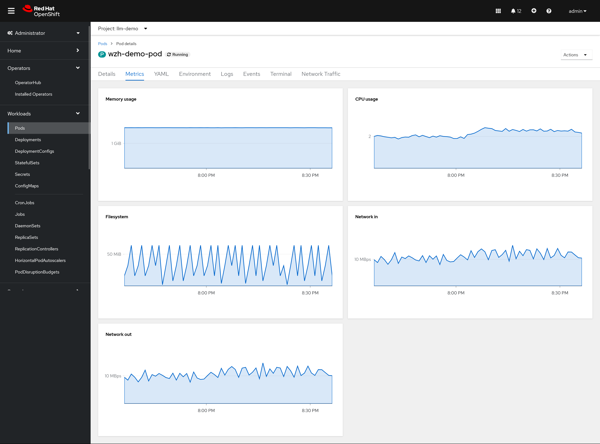
limitation
- It is TP right now, but can move to GA based on customer requirement.
- It costs more resource, because it need to inject the bytecode to the java app, and collect the log and trace, especially for heavy load apps.